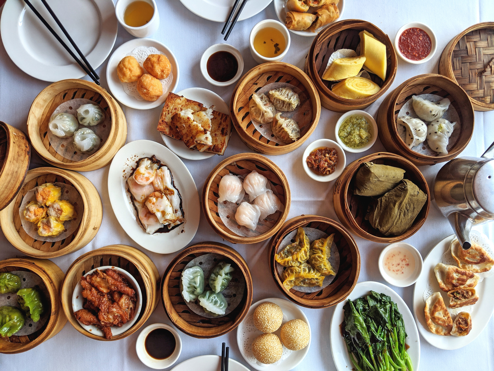

Introduction
Guangzhou, the capital of Guangdong Province in China, is a vibrant metropolis known for its historic significance and modern achievements. Located in southeastern China, Guangzhou has a population exceeding 14 million people. It enjoys a subtropical climate similar to California's, with mild winters and warm, humid summers, perfect for outdoor activities year-round. Famous for being the birthplace of Cantonese cuisine, the city offers an unparalleled culinary experience, from street food to high-end restaurants. Home to the iconic Canton Tower and the sprawling Baiyun International Airport, Guangzhou is a blend of ancient history and modern innovation. It's also known for the Canton Fair, China's largest trade fair, attracting global business communities biannually.
History
Guangzhou, one of China's oldest cities, was established over 2,200 years ago during the Qin Dynasty. It quickly became a significant port and trading hub on the maritime Silk Road. The city played a pivotal role in the Opium Wars, leading to the establishment of a British concession. Throughout its history, Guangzhou has remained a center for commerce, culture, and innovation.
Food
Guangzhou is famous for its delicious food, especially Cantonese cuisine, which is all about fresh ingredients and light flavors. Think of small, tasty dishes like dim sum, which are little bites of food served with tea - super popular for breakfast or brunch. Then there's roast pig with super crispy skin, and a simple yet yummy dish called white cut chicken, which is just tender chicken with a flavorful dip. Seafood is a big deal too, always cooked to bring out its natural taste. Plus, there are these amazing slow-cooked soups that are full of healthy, tasty ingredients. It's all about eating food that's simple, fresh, and healthy. For me, I love the dim sum the most, particularly the steamed rice rolls. You can find the best rice rolls in New York at Flushing, Queens, which is called Joe's Steam Rice Roll. There are also lots of place to try dim sum at Chinatown.
